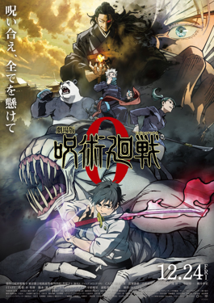

劇場版 呪術廻戦 0
Jujutsu Kaisen 0
Last Edit Made 16 March 2024 by Anon Wiki Member
From Wikipedia, the free encyclopediaJujutsu Kaisen 0 (Japanese: 劇場版 呪術廻戦 0, Hepburn: Gekijōban Jujutsu Kaisen Zero, "Jujutsu Kaisen 0: The Movie") is a 2021 Japanese animated dark fantasy film.[4] I t is based on the 2017 manga Jujutsu Kaisen 0, which is itself a prequel to the manga series Jujutsu Kaisen, both mangas having been written by Gege Akutami. It was directed by Sunghoo Park from a screenplay by Hiroshi Seko, and stars Megumi Ogata, Kana Hanazawa, Mikako Komatsu, Kōki Uchiyama, Tomokazu Seki, Yuichi Nakamura, and Takahiro Sakurai. The film follows Yuta Okkotsu, a young student who becomes a sorcerer and seeks to control the Cursed Spirit of his childhood friend Rika Orimoto in Jujutsu High, alongside other skilled sorcerers in training.
Originally intended as an arc of the animated television series Jujutsu Kaisen, studio MAPPA changed the format of it during discussion. The staff decided to expand the narrative from that of the original manga by adding new scenes focused on Yuta's mentor Satoru Gojo and the antagonist Suguru Geto. King Gnu performed the two theme songs. Given the large budget for the movie, MAPPA aimed to make more appealing fight sequences than the ones from the animated television series.
Jujutsu Kaisen 0 was released in Japan on December 24, 2021, by Toho. Upon its release, the film received positive reviews for its accessible storytelling, the animated fight sequences, and soundtrack. However, it was also criticized for its short length, as some characters felt underdeveloped when compared to the lead. It was the highest-grossing film at the Japanese box office in 2021, and took $196.2 million worldwide.
Plot
High school student Yuta Okkotsu suffers from being frequently bullied, when one day, his bullies are gravely injured by a Cursed Spirit that clings to him. The higher- ups of the Jujutsu Society wish to have the boy killed, as his curse is a dangerous spirit. However, a teacher at Tokyo Jujutsu Technical High, Satoru Gojo, recruits Yuta to join the school in November 2016, thus saving him. Yuta explains that the Cursed Spirit is Rika, a childhood friend whom he had promised to marry when they grew up. Rika died in a freak accident and became an overprotective spirit that harms anyone who threatens him. Yuta meets fellow students Maki Zen'in, Toge Inumaki, and Panda, all with distinct abilities of their own.
During his first mission with Maki, Yuta successfully summons Rika on his own for the first time to save them from a Cursed Spirit. Three months pass in his school training, and he grows close to Maki, Toge, and Panda. One day, on a mission with Toge, the boys are attacked by a high-level Curse. The man behind the attack was Suguru Geto, a previous student and old friend of Gojo's, who defected from the school and killed over a hundred innocent people on a mission.
Geto attempts to get Yuta on his side so they can make use of Rika, but Yuta refuses when he insults Yuta's friends due to unsettled circumstances. Geto declares war to activate a portal to the under-world: he will release a thousand Curses upon the city to remove non-sorcerer humans, as he believes them to be undeserving and beneath sorcerers. Geto's real reason for the war, however, is to distract Gojo so he can kill Yuta and add Rika to his collection of cursed spirits. Gojo realizes this upon learning of Yuta's background, and sends Inumaki and Panda back to the school to protect Yuta and Maki during the night of Geto's attack. Geto overpowers them all, leaving only Yuta conscious. Enraged at seeing his friends hurt, Yuta promises himself as a sacrifice to Rika in order to strengthen their bond. As a result, Geto is severely wounded. He is found by Gojo, who after reflecting on their past friendship, executes him.
Gojo confirms that Yuta was the one who inadvertently cursed Rika through un-specified ties to royal bloodlines within the hierarchy of Japan's caste system, rather than the other way around, by being unable to accept her death. Yuta broke the curse after promising himself to Rika, and she is able to pass on peacefully after Yuta continues training as a sorcerer within the institution.
In a post-credits scene, Geto's former ally Miguel eats lunch with Yuta in Kenya, and Gojo comes to join them.
Voice Cast

Production